TVV RESEARCH SLATE — October 18, 2026 — 11 desks
1. Major Geopolitical Conflict Developments
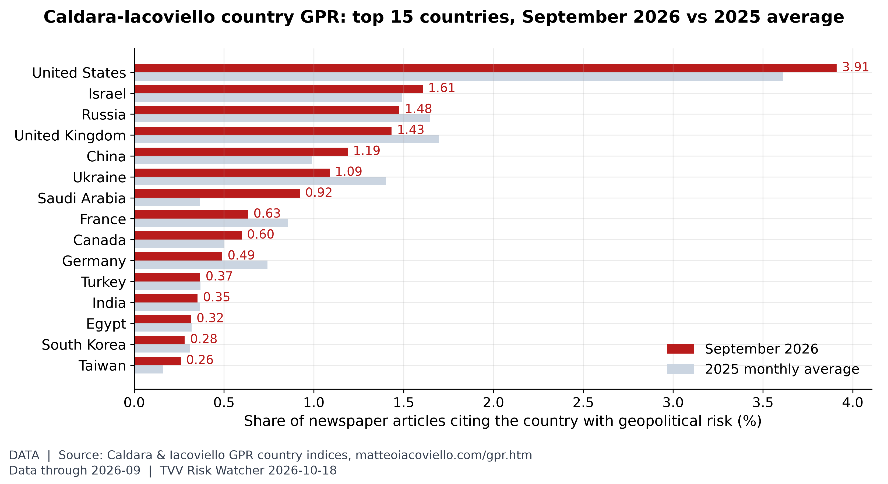
Where geopolitical risk is concentrated. In September 2026, United States (3.91% of articles, vs 3.61% in 2025), Israel (1.61%) and Russia (1.48%) led the Caldara-Iacoviello country GPR rankings. [Data; data as of 2026-09 (monthly; held: next update early Nov)] Source: matteoiacoviello.com data page
- ★ Iran's IRGC said Oct 17-18 that two oil tankers, each carrying about two million barrels of crude, caught fire after hitting naval mines in the Strait of Hormuz while using routes Tehran calls unauthorised and with tracking systems off. Al Jazeera IRGC tanker mines · RFE/RL IRGC mine claim
- UKMTO on Oct 17 reported delayed Friday incidents northeast of Al Jubayl, Saudi Arabia: a tanker struck by an unknown projectile with crew evacuated, and another damaged by an RPG fired from a small boat, all crew safe. CBS UKMTO Al Jubayl attacks · X news Al Jubayl tankers
- Update: UKMTO also logged an Oct 17 LNG-tanker encounter about 140 nm southeast of Al Mukalla, Yemen, where a skiff fired two shots and the ship's armed guards fired warning shots before the skiff withdrew. X news LNG skiff Yemen
- ★ Iranian Foreign Minister Abbas Araghchi said Oct 18 Tehran's seven-day Hormuz reopen plan remains on the table via Qatari mediators if Washington meets conditions including ending the US naval blockade; Hormuz could reopen on day six with talks on day seven. Arab News Araghchi Hormuz plan · Indian Express 7-day plan explainer
- ★ Ukraine's Air Force said Russia fired one Iskander-M ballistic missile and 180 attack drones overnight into Oct 18, with air defences downing or jamming 152 drones; strikes hit 20 locations and a Zaporizhzhia residential building killed a 27-year-old woman. RBC-Ukraine Air Force Oct 18 · Kyiv Independent Oct 18 toll
- Update: Zelenskyy said Oct 18 Russian overnight strikes killed two and injured 12 in Ukraine, hit substations in Vinnytsia, Zhytomyr, Khmelnytskyi and Odesa, left tens of thousands without power, and counted 76 energy-sector attacks since Trump's energy ceasefire plus nearly 2,700 attack drones in a week. Al Jazeera Zelenskyy energy ceasefire · Anadolu overnight exchange
- ★ A massive Ukrainian drone raid on St Petersburg overnight into Oct 18 killed one and injured five, Russia's city governor said, with fires at the oil terminal, Ruchyi oil depot and warehouses; about 20,000 lost power in Leningrad region as Moscow claimed 1,015 drones downed overnight. Al Jazeera St Petersburg drones · Anadolu St Petersburg toll
- Taiwan's MND said it tracked two PLA aircraft, five PLAN ships and nine official ships from 6 a.m. Oct 17 to 6 a.m. Oct 18; both aircraft crossed the median line into the northern and central ADIZ, and October totals stand at 115 aircraft and 208 ship tracks. Taiwan News PLA Oct 18 track
- Pakistan suspended commercial traffic at the Taftan and Gabd-Rimdan crossings with Iran around Oct 17 citing security and smuggling, stranding fuel and food trucks while officials called the closure temporary. X news Pakistan-Iran border
2. Major Terror / Security Incidents
- ★ Pakistan's CTD Punjab said Oct 17 it arrested eight suspected terrorists linked to Fitna al-Khawarij and other banned outfits in province-wide operations, recovering 465 grams of explosives, three detonators, two hand grenades and fuse wire. APP CTD Punjab arrests
- ★ Arizona prosecutors said Oct 16 that Matthew Bjornholt, 27, faces a felony terrorist-threat charge over an alleged bomb-and-gun mass-casualty plan against a Jewish or Muslim house of worship; a judge set $100,000 bond with electronic monitoring. FOX 10 Phoenix Bjornholt
- German police in North Rhine-Westphalia took a 19-year-old from Hagen into preventive custody as a fourth suspect in an alleged Islamist attack-plot probe covering Hagen and Unna; no weapons were found and no charges had been filed as of the Oct 16 statement. Western Watch Hagen fourth suspect
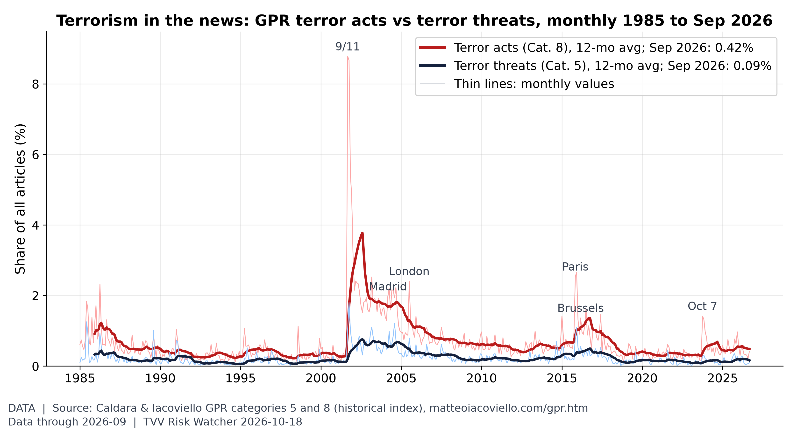
Terror acts vs terror threats. In September 2026, terror-act articles were 0.42% of all articles (2025 average 0.55%) and terror-threat articles 0.09% (2025 average 0.19%), far below the 9/11 peak of 8.8%. [Data; data as of 2026-09 (monthly; held: next update early Nov)] Source: matteoiacoviello.com data page
3. Earthquakes and Eruptions
- USGS lists no damaging M6+ quake since Oct 14: the Oct 16 Ozernovskiy M6.9 stayed green PAGER, a M5.7 near Khuzdar, Pakistan, on Oct 17 drew a yellow PAGER but was below M6, and no M6 or larger has struck since 0335 UTC Oct 16. USGS significant week feed · USGS Ozernovskiy M6.9 · USGS Khuzdar M5.7
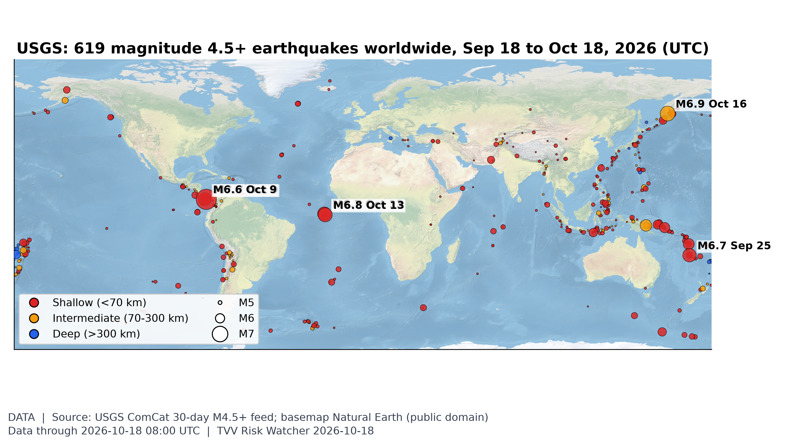
Where the earth shook this month. USGS logged 619 M4.5+ quakes in the 30 days to Oct 18, 12 of them M6+; the largest was M7.7 12 km WSW of Pitaloza Arriba, Panama on Oct 9 (UTC). [Data; data as of 2026-10-18 08:00 UTC (USGS 30-day M4.5+ feed, pulled ~7 AM ET Oct 18)] Source: earthquake.usgs.gov data page
4. Solar / Space Weather
- ★ North magnetic pole drift (measured): NOAA data show the north magnetic pole moved 454 km from 2015 to 2025, an average of 45.4 km/yr (37.0 km/yr in 2024-25, down from a 57.6 km/yr peak in 2010-11), crossing the Date Line in 2017-18 on its way from the Canadian Arctic toward Siberia, and NOAA's WMM2025 model projects about 33 km/yr through 2030. The drift is measured fact, but no one can predict the timing of any sudden geomagnetic excursion; Michael's own view (his view, not a forecast) is 2035 at the earliest. NOAA wandering geomagnetic poles · NOAA NP.xy pole positions · WMM2025 NP forecast
- ★ NOAA SWPC's 2205 UTC Oct 17 forecast shows a quiet Oct 18-19, then a peak planetary Kp of 5.00 in the 03-06 UTC window of Oct 20, putting G1 (minor storm) odds in play that day, with S1 radiation storm odds still low. SWPC 3-day geomag forecast
- SWPC daily indices show a quiet week after the G3 storm, hold since Oct 10 (peak Kp 7.00); definitive daily max Kp stayed at or below 3.67 from Oct 12 through Oct 17 (Oct 17 max Kp 3.00). SWPC daily geomagnetic indices
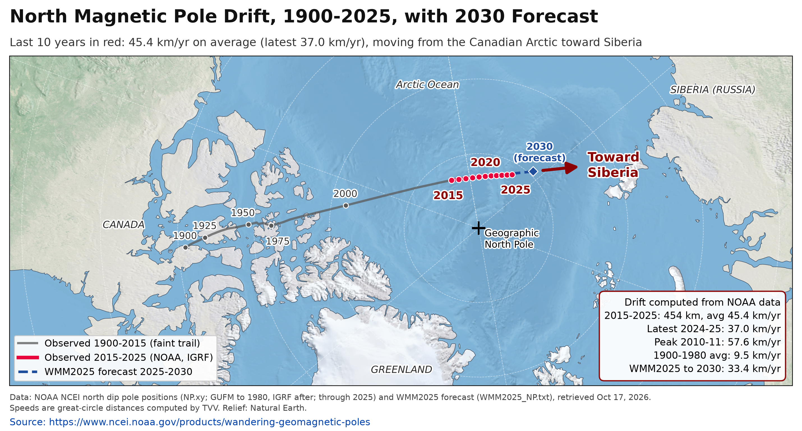
North magnetic pole drift (measured). North magnetic pole drift, 1900-2025, with WMM2025 forecast to 2030. Data through 2025 (NOAA NCEI NP.xy), retrieved Oct 17, 2026; speeds computed by TVV as great-circle distance between yearly positions. [Data; data as of 2025 (NOAA NCEI NP.xy observed positions; WMM2025 forecast 2025-2030; retrieved 2026-10-17)] Source: ncei.noaa.gov data page
5. Critical Infrastructure / Transportation Disruptions
- ★ Zelenskyy said Oct 18 overnight Russian strikes hit substations in Vinnytsia, Zhytomyr, Khmelnytskyi and Odesa, leaving tens of thousands of families without power as repair crews worked; Kyiv Independent separately tallied nationwide civilian casualties of at least 10 killed and 73 injured over the past day. Al Jazeera power cuts Oct 18 · Kyiv Independent casualty tally
- Leningrad region officials said about 20,000 people lost electricity after the overnight Ukrainian drone raid into Oct 18 on the St Petersburg area, while Pulkovo airport restricted operations for safety. Al Jazeera St Petersburg drones · Anadolu overnight exchange
- EIA's week-to-Oct 9 fuel stocks, held for the next weekly print due the week of Oct 19, showed US gasoline at 208.3M barrels (-3.8% vs the 2021-25 average) and distillates at 102.6M (-11.1%). EIA gasoline stocks weekly · EIA distillate stocks weekly
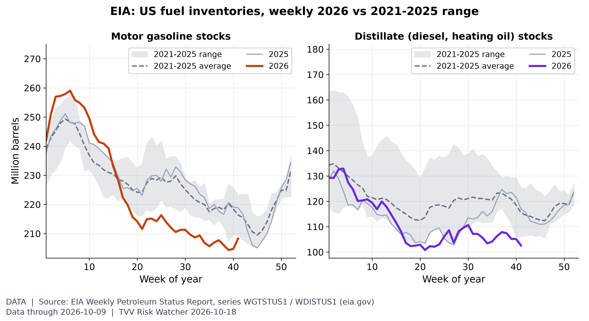
US fuel stocks. In the week to Oct 9, US gasoline stocks were 208.3M barrels (-3.8% vs the 2021-25 average) and distillate stocks 102.6M (-11.1%). [Data; data as of 2026-10-09 (weekly; held: next EIA report due week of Oct 19)] Source: eia.gov data page
6. Econo-Metrics
- ★ Gasoline: AAA's national regular average slipped to $4.2988 a gallon on Oct 18 from $4.3085 a day earlier, with diesel at $6.3224, still far above year-ago levels as crude stays above $100. AAA national average · AAA newsroom gas prices
- ★ CME FedWatch-linked prints on Oct 18 still clustered near an 82%-84% chance of an Oct 28 hold at 3.75%-4.00%, while Kalshi's hold contract last traded at 86 cents and the 25bp hike at 14 cents; Kalshi's Dec 9 hike sat near 75 cents. Kalshi Oct Fed decision · CME FedWatch tool · Investing.com Fed monitor
- ★ Brent settled Oct 16 at $109.86, up $3.94 (3.7%), while WTI settled at $101.41, up $3.44 (3.5%), as Hormuz attacks kept supply risk elevated into the weekend. Newsquawk Fri oil settle · WSJ WTI above $100
- Indexes, week to Oct 16: the Dow rose 0.67% to 52,002.41, the S&P 500 fell 1.95% to 7,659.44 and the Nasdaq slid 4.48% to 26,140.03, with tech the main drag. TechCortex weekly stocks · Yahoo Oct 16 markets
- The 10-year Treasury yield ended Oct 16 near 5.09%-5.10% after spiking to 5.33% on Wednesday's CPI, with the VIX up 21% Friday to 19.99; FRED HY OAS last printed 3.16 pt on Oct 13 (held). Yahoo Oct 16 markets · TechCortex weekly stocks · FRED HY OAS
- Hold since Oct 15: BLS said September producer prices jumped 1.3% for the month and 6.3% on the year, led by energy up 10.8%. BLS PPI release
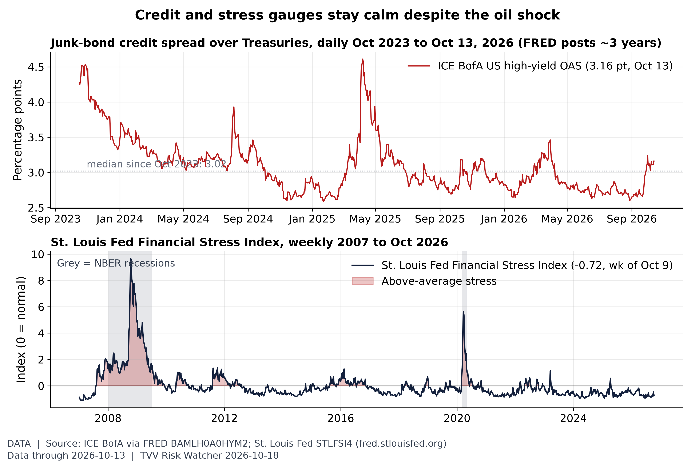
Credit markets: calm, maybe complacent. The high-yield spread was 3.16 pt on Oct 13, well inside its 3-year range (2.59-4.61) and far from stress levels, and the St. Louis Fed stress index read -0.72, below normal and lower than 88% of weeks since 2007: credit is not yet pricing the geopolitical and oil risk. [Data; data as of 2026-10-13 (HY OAS) and 2026-10-09 (STLFSI4) (held: FRED unreachable Oct 16-18; Friday's VIX jump not reflected)] Source: fred.stlouisfed.org data page
7. Epidemic / Bio-Metrics
- ★ Kenya's Health Ministry said Oct 17 four more Bundibugyo Ebola cases were confirmed among quarantined contacts, raising the national total to seven including one death; 128 of 130 contacts were traced, with no evidence of community transmission, Africa CDC said. Africa CDC Kenya Ebola · Xinhua Kenya seven cases
- ★ CDC FluView for MMWR week 40 (ending Oct 10), released Oct 16, put outpatient ILI visits at 2.1% nationally, up from week 39 and above the same week last season's pace but still below the 2.9% baseline. CDC FluView week 40 · CDC FluView hub
- No new Critical Water Shortage declaration found since Oct 16; England's Defra severe-drought step and the Philippines' Angat reallocation remain the latest prints (both already in the Oct 17 Digest). Water Magazine severe drought · ABS-CBN Angat cut
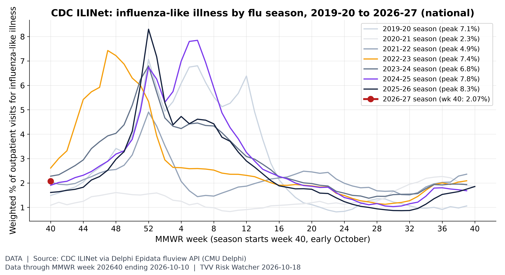
Flu season starting line. The 2026-27 flu season opened at 2.07% of outpatient visits for influenza-like illness in MMWR week 40 (ending Oct 10), vs 1.61% in the same week last season; the 2024-25 season peaked at 7.8%. [Data; data as of MMWR week 202640 ending 2026-10-10 (CDC FluView release 2026-10-16; provisional)] Source: cdc.gov data page
8. Gold and Silver
- ★ Weekend spot via gold-api early Oct 18: gold $4,166.10, silver $57.12 (ratio 72.9, matching today's metals graph); Kitco's Friday 5 p.m. bid still shows gold $4,164.10, silver $56.87 and copper $6.6166/lb. gold-api XAU · gold-api XAG · Kitco live prices
- Crypto early Oct 18 (CoinGecko): bitcoin about $81,946, ether about $2,414 and XRP about $1.30, near Kitco's Friday prints. CoinGecko simple price · Kitco live prices
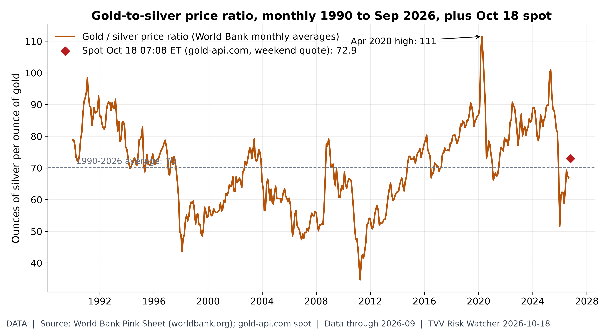
Gold-to-silver ratio. An ounce of gold buys 72.9 ounces of silver at the weekend spot (gold $4,166, silver $57.12), vs 66.9 in September and a 1990-2026 average of 70. [Data; data as of 2026-09 (World Bank monthly, held); 2026-10-18 07:08 ET (gold-api.com spot, weekend quote)] Source: worldbank.org data page
9. Stock Averages and Nasdaq Major Movers
- ★ Gainers: Fair Isaac (FICO) +15.5%; Cognizant (CTSH) +11.5%; Equifax (EFX) +10.6%; Losers: Ciena (CIEN) -26.0%; Coherent (COHR) -25.5%; Lumentum (LITE) -25.3%; S&P wk Oct 16 TechCortex S&P weekly movers
- ★ Gainers: Brown & Brown (BRO) +10.4%; Accenture (ACN) +9.9%; Gallagher (AJG) +9.5%; Losers: HPE (HPE) -25.0%; Skydance (SKYD) -24.6%; Flex (FLEX) -24.5%; S&P wk Oct 16 TechCortex S&P weekly movers
- ★ Gainers: Tyler Tech (TYL) +9.5%; Darden (DRI) +9.5%; Brown-Forman (BF.B) +9.4%; Losers: Supermicro (SMCI) -24.4%; Dell (DELL) -22.9%; Bloom Energy (BE) -21.1%; S&P wk Oct 16 TechCortex S&P weekly movers
- ★ Gainers: Cognizant (CTSH) +10.6%; CoStar (CSGP) +10.6%; Verisk (VRSK) +7.6%; Losers: CoreWeave (CRWV) -23.5%; Rocket Lab (RKLB) -22.6%; Nebius (NBIS) -21.2%; Nasdaq-100 wk Oct 16 Capital Insight Nasdaq-100 weekly
- ★ Gainers: Charter (CHTR) +7.5%; Coca-Cola EP (CCEP) +7.0%; Idexx (IDXX) +7.0%; Losers: Applied Materials (AMAT) -17.7%; Teradyne (TER) -15.3%; Palo Alto (PANW) -15.3%; Nasdaq-100 wk Oct 16 Capital Insight Nasdaq-100 weekly
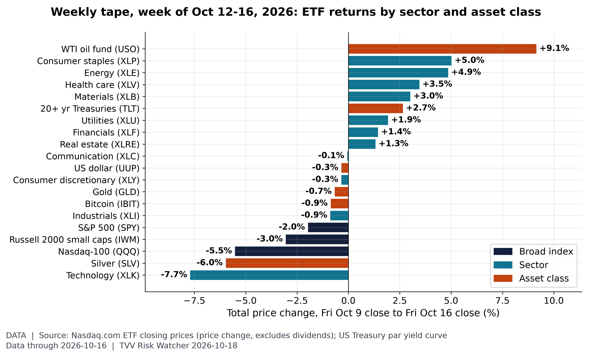
The week by sector and asset class. In the week to Oct 16, the best performer was WTI oil fund (USO, +9.1%) and the worst Technology (XLK, -7.7%), with the S&P 500 ETF at -2.0%; the 10-year Treasury yield moved from 5.24% to 5.09%. [Data; data as of 2026-10-16 (Friday closes, Nasdaq.com ETF history; Treasury par curve)] Source: nasdaq.com data page
10. Polymarket and Kalshi Sentiment Highlights
- ★ Ukraine ceasefire: Polymarket priced a Russia-Ukraine ceasefire deal by Dec 31 at 9.5% on Oct 18, down from 13.5% on Oct 17, with 1.6% by Oct 31. Polymarket Ukraine ceasefire
- ★ Hormuz: Polymarket priced Strait of Hormuz traffic returning to normal by Dec 31 at 12.5% on Oct 18, up from 11.5% on Oct 17. Polymarket Hormuz normal
- FOMC: Kalshi's Oct 28 hold contract last traded at 86 cents on Oct 18, the 25bp hike at 14 cents, while the Dec 9 hike last traded near 75 cents. Kalshi Oct Fed decision · CME FedWatch tool
- ★ US-Iran: Polymarket priced the US-Iran ceasefire continuing through the Nov 3 midterms at 78.5% on Oct 18, up a point from Oct 17. Polymarket US-Iran ceasefire
- ★ Midterms House: Democrats traded at 90.5% to win the House on Polymarket on Oct 18, with Election Day Nov 3. Polymarket House 2026
- Midterms Senate: Democrats traded at 64.5% to control the Senate on Polymarket on Oct 18, Republicans at about 37.5%. Polymarket Senate 2026
- Yemen: a Saudi-Houthi ceasefire announced by Dec 31 traded at 34.5% on Polymarket Oct 18, with the Oct 31 contract at 7.6%. Polymarket Saudi-Houthi ceasefire
- Fed dissent: Polymarket priced zero October FOMC dissenters at 32.5% on Oct 18, with one dissenter at 21.5% and two at 24.5%. Polymarket Oct Fed dissent
- OpenAI AGI: Polymarket held odds of an OpenAI AGI announcement before 2027 at 8.5% on Oct 18. Polymarket OpenAI AGI
- AGI: Kalshi priced any-company AGI before 2027 at 11 cents on Oct 18, up from 8 cents on Oct 17, and before 2028 at 53 cents. Kalshi AGI by date
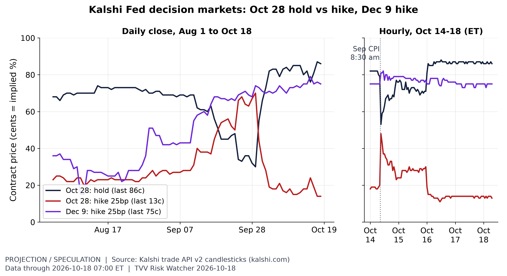
Fed hike odds after CPI. Kalshi's Oct 28 hold trades about 86c early Oct 18, back from its post-CPI dip, while a Dec 9 hike sits near 75c: markets see the Fed waiting until December. [Projection/Speculation; data as of 2026-10-18 07:00 ET] Source: kalshi.com data page
11. Tech-Metrics
- ★ Cybercab authorized: Texas DMV's roster, per TeslaBytes/fsddb and AI Shift mirrors as of Oct 18, still lists 803 Tesla Robotaxi vehicles including 349 Cybercabs and 454 Model Ys (unchanged from Oct 17). TeslaBytes TxDMV tracker · AI Shift robotaxi radar
- ★ SI-AGI Danger / Arrival Index: on Oct 18 Kalshi priced any-company AGI before 2027 at 11% and before 2028 at 53%, while Polymarket's OpenAI-before-2027 held at 8.5%. Kalshi AGI by date · Polymarket OpenAI AGI
- YouTube pick (Oct 17): Jensen Huang told Lex Fridman why Taiwan dominates semiconductor engineering and how China approaches AI and robotics, a GEO/TECH signal into midterms and supply-chain risk. Lex Clips Jensen Taiwan chips · Lex Clips China AI robotics
- YouTube pick (Oct 17): CNBC's segment on America's AI chip talent crisis flagged labor and capacity bottlenecks as TSMC and US foundry buildouts lag demand. CNBC AI chip talent crisis
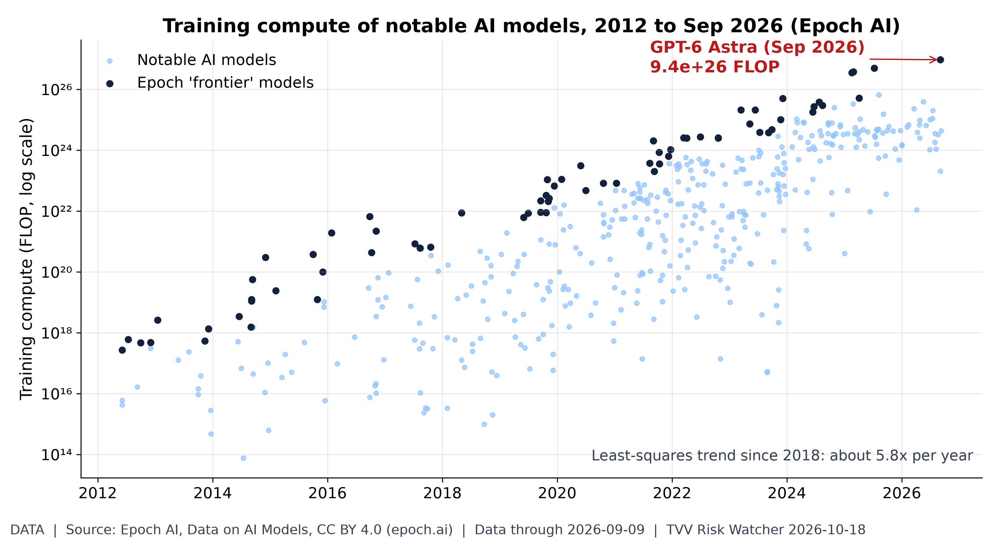
AI capability scaling. Training compute for notable models keeps compounding roughly 5.8x a year, the scaling engine behind SI-AGI risk. [Data; data as of 2026-09-09 (latest model in dataset)] Source: epoch.ai data page
TECHVESTVENTURES ACTION-ALERT — October 18, 2026
EDITOR — Michael Hentschel
Most news events require or spawn no action or reaction, some (but not many) are or become warnings. We draw attention to substantial lifestyle risks and market risks in particular, some created by Mid-Term Vote anxieties, Middle East tensions, vast over-indebtedness globally, and other events we track. Longer term but capable of causing sudden power surges as serious as the Carrington Event. Climate instability occasioned by long-term cyclical solar electro-magnetic flares, is becoming much more prominent and even more likely. New AI predictive analytics and pattern seekers are pointed in some of these directions, and we monitor imminent likelihood. Some readers might hedge and others might see opportunity. The above is not investment advice.